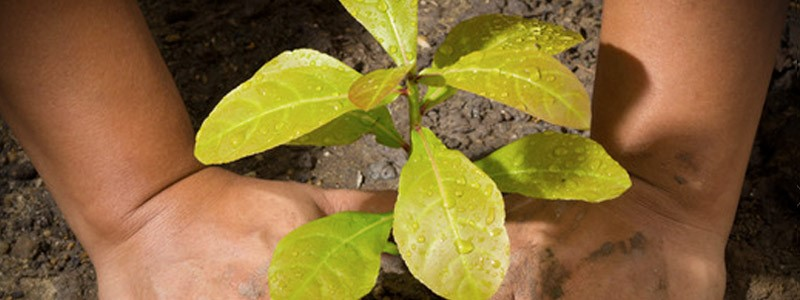
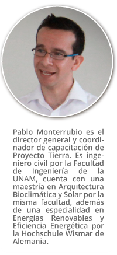
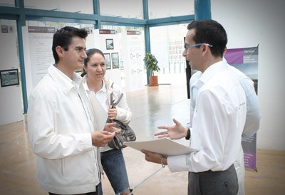

Proyecto Tierra
La capacitación ambiental brindada por Proyecto Tierra, empresa mexicana fundada por un exbecario del Consejo Nacional de Ciencia y Tecnología (Conacyt) y actual profesor de la Universidad Nacional Autónoma de México (UNAM), tiene como propósito divulgar el conocimiento para el cuidado del medio ambiente, mediante la impartición de cursos que auxilian en la creación de proyectos sustentables, por ejemplo, cursos de energías renovables o muros y techos verdes.
 Una forma de brindar solución a diversas problemáticas en materia ambiental, social y económica es el emprender proyectos sustentables (plan que involucra las dinámicas sociales y económicas de las poblaciones tomando en cuenta el ambiente), ya que estos contribuyen a disminuir el daño ambiental, además de ser rentables y pueden llevarse a cabo por la misma comunidad, combinando justicia social y equidad de género. Debido a la importancia que tiene la sustentabilidad en varias áreas, la empresa Proyecto Tierra, que inició en el 2010, está diseñada para brindar asesoría a empresas para la implementación de proyectos sustentables, así como dar capacitación de educación ambiental para difundir el conocimiento al público en general y capacitar técnicos de nivel profesional y posgrado. Al respecto, el ingeniero Pablo Monterrubio, director de la empresa, comentó en entrevista: “Básicamente queríamos brindar consultoría en temas ambientales como agua, residuos, energía y edificaciones; sin embargo, no sabían las empresas qué era un consultor ambiental, por ello migramos de ofrecer la consultoría a explicarles los temas básicos. Así se convirtió en un centro de capacitación o de educación, para dar información a la población de temas ambientales”. Los cursos que imparte Proyecto Tierra tienen como principal función enseñar a los estudiantes a pensar de forma sustentable, al incluir como primer tema el cambio climático y desarrollo sustentable. “Es un tema muy interesante, todo el mundo habla de sustentabilidad, sin embargo, no muchos conocen su significado, nosotros nos basamos en el informe Brundtland”, explicó el ingeniero Monterrubio. Este proyecto de capacitación se fundó en enero de 2010 como resultado del curso de energías renovables impartido en Puebla, solicitado por la Agencia Alemana de Cooperación Técnica (GIZ, por sus siglas en alemán), anteriormente Agencia Alemana Inwent, para un programa de intercambio a través del Conacyt dirigido a aquellos alumnos mexicanos que realizan su especialización en energías renovables en Alemania. El curso fue propuesto por el ingeniero Monterrubio porque él formó parte de la primera generación de alumnos que tomaron esta especialidad. “Sabía cómo era el programa de intercambio porque fui partícipe, vi la necesidad de un curso para homogeneizar los conocimientos de los participantes del programa”, dijo. Este primer curso, con duración de tres días, tuvo los fundamentos teóricos de las energías renovables como biomasa, energía eólica y fotovoltaica a un nivel mínimo, para que los estudiantes tuvieran un conocimiento homogéneo, ya que al ser una convocatoria nacional, los alumnos tienen diferentes perfiles. Actualmente, este programa de intercambio tiene 44 años apoyando en la capacitación de mexicanos en el extranjero y Proyecto Tierra sigue impartiendo este curso, con la diferencia en la duración, al aumentar a 6 días la capacitación. “Es un curso a la medida para esta agencia”, comentó el ingeniero Monterrubio. Además de este curso, se imparten otros temas de forma teórica o teórica-práctica como desarrollo sustentable, energías renovables, arquitectura bioclimática, impacto ambiental, cambio climático, techos y muros verdes, por mencionar algunos. Estos talleres tienen tres líneas objetivo: 1. Empresarios: a los dueños, gerentes, tomadores de decisiones en las empresas, los talleres son puntuales, con poca información técnica y enfocados en la recuperación de la inversión. 2. Ingenieros: este curso es más técnico, al mostrar el proceso mediante ecuaciones y tablas. 3. Técnicos operadores: que pueden ser instaladores o personas de mantenimiento. Por ejemplo, albañiles, plomeros, que no necesariamente son ingenieros. El director de Proyecto Tierra expresó que las líneas objetivo están diseñadas para tener una secuencia lógica del conocimiento y cubrir la cadena completa para implementar un sistema ambiental. “El primero a convencer es al dueño, quien al aceptar trae al ingeniero y a los técnicos que llevan a cabo la acción. Los operadores pueden ser plomeros para la instalación de calentadores de agua solar o electricistas para la instalación de celdas fotovoltaicas”, explicó. También Proyecto Tierra participa en la elaboración de estándares de competencias laborales en la Secretaria de Educación Pública (SEP) para certificar al personal sin estudios universitarios en temas de energías renovables; por ejemplo, en los estándares de instaladores de paneles solares. Para difundir el conocimiento a todo público interesado en temas ambientales, esta empresa divulga cada 15 días pósteres en su página web y a través de las redes sociales,con imágenes alusivas al planeta o al medio ambiente. Incluso, cada evento de aniversario, totalmente gratuito, es una oportunidad que ofrece al público en general a acercarse a los temas ambientales, al ofrecer mesas redondas de discusión y congresos. El próximo será un rally de conocimientos y stands con equipos empleados en energías renovables. Para personas expertas en temas de índole ambiental, cuentan con publicaciones en la revista Vector de la Ingeniería Civil. “Hemos escrito sobre bonos de carbono, techos verdes, a solicitud de lo que les parece interesante”, externó el ingeniero Monterrubio. Las perspectivas que tienen para el futuro son incluir juegos didácticos con enfoque ambiental, que estarán dentro de la página web o como una aplicación descargable, al igual que transferir los cursos a una plataforma virtual.
